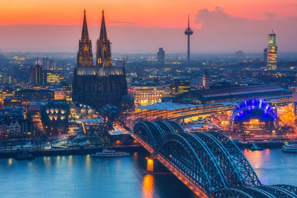
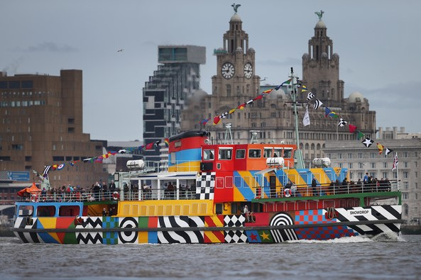

- 
- 


Koln:
Located in the west of Germany, this well-known city is one I am very fond of. I have visited Cologne many times due to family and it is a part of the world I have become very familoar with over the years growing up. The old cathedral is a spectacle in itself in the city centre. There are also beautiful quieter areas down along the river Rhein where you can relax and enjoy a drink. There is always a strong sense of pride from people that are from the city. Everything about it I love and it is a place I will visit many more times.
Liverpool
The famous city located on Merseyside in England doesn't just hold the bragging rights of two Premier League clubs but also a fantaatic tourist city break. I have visited Liverpool once in 2014 for a Liverpool game. Despite this being heavily drowned in its footballing culture, the area boasts a fantastic, modern, clean city centre ideal for shopping and browsing. The architecture is something subtle to note as each building has a unique twist. The famous Royal Albert Dock is a lovely area to explore day or night. Liverpool has also built a fantastic reputation among young Irish holiday tourists for a standout night-life experience.
Barcelona:
Often referred to as the capital of Catalonia, Barcelona is an amazing city that offers something for everything. I visited Barcelona once and it is by far one of my favourite places I have visited. The vast gridded system that originated and expanded from the old town gives it its unique historical look. The Sagrada Familia is an obvious claim for every tourists number one priority and I must admit it was incredible and definitely worth the trip to see it. Much of the architecture inspired by Gaudi provides plenty options to visit unique architecture and buildings. And if that's not enough, you have a perfect yellow, sandy beach that runs all along the edge of the city.
Tokyo
Tokyo is a city I have never visited before but would love to solely because of its completely different and unique culture that exists at the other side of the world. A highly populated city of tall buildings and bright lights gives home to an absolutely massive tourist attraction. We know the Japanese are known to be a bit mad so what better way to find out more than to visit the city itself!
New York
This city doesn't really even need an explanation and I think you would find it hard to disagree. New York City. The big destination on everyone's bucket list is somewhere that I would love to visit. I have never been to the United States but what an introduction NYC would be. Much like Tokyo, it is known for its extravagantly tall buildings and the highlight of the bright lights falls to Times Square. Also, for your historcal sight-seeing there lies the famous Statue of Liberty waiting for a visit. The question is who isn't interested by the 'Big Apple'? n
Bali:
Indonesia is a beautiful country and if you're looking for a place to explore, Bali most likely takes the cake. The greenery and scenic nature on display for a tourist destination that popular is breathtaking. The aerial images and videos of holiday homes situated deep in the woods are nothing short of spectacular and would defintely make for a once in a lifetime experinece! I find the area very interesting due to its popularity among travellers yet the area's ability to not get run over by tourism and still stick to the landscape of their deep-rooted nature.